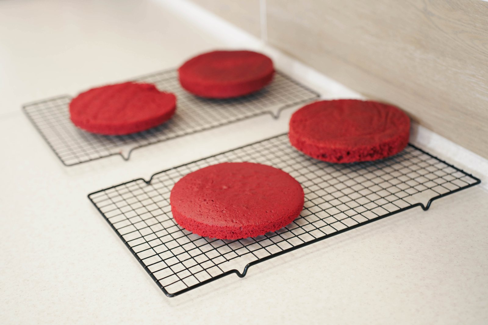

Базовый курс «Юный кондитер»
Маленькие шаги. Большие сладкие открытия.
Открыт набор
Записаться на программу
Регулярные занятия 1–2 раза в неделю, на которых дети учатся с нуля готовить десерты. Двигаемся от простого к сложному, пробуем новое и учимся спокойно относиться к ошибкам.
Ребята выбирают продукты, рассчитывают ингредиенты, осваивают технику и убирают рабочее место. Вместе с навыками появляется уверенность: «Я могу, у меня получается!»
Каждое занятие заканчивается готовым десертом, улыбкой и желанием продолжать.
Что будем готовить
- Кексы, печенье, капкейки и трайфлы
- Классические и муссовые торты
- Меренговый рулет и десерт «Павлова»
- Зефир и эклеры
- Тематические и праздничные десерты
Вот так рождается радость
